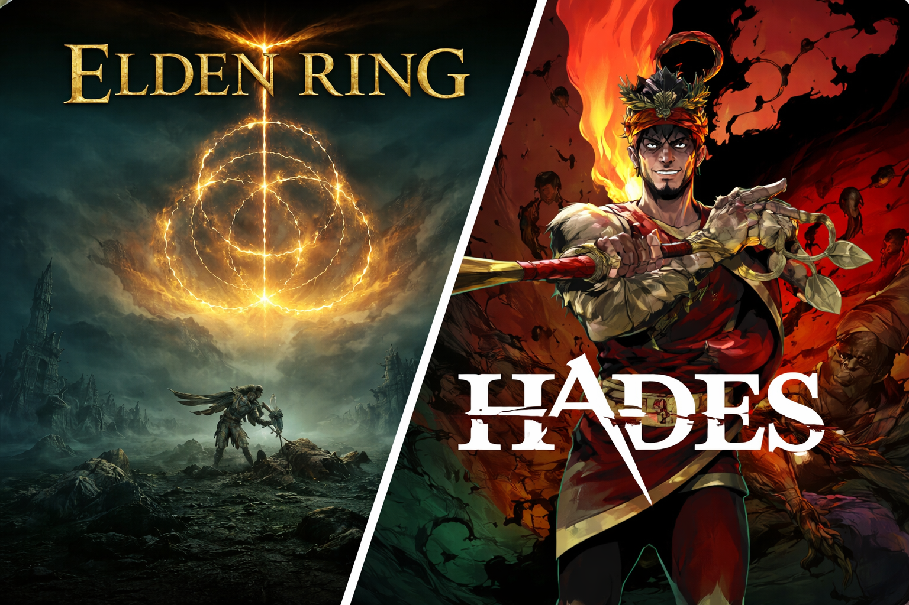

How we work on new updates:

Click on the game you want to look at:

More information about these games:
| Company | Country | Game |
|---|---|---|
| Bandai Namco Entertainment | Japan | Elden Ring |
| Supergiant Games | United States of America | Hades |
Prices for each game:
| Name of the Game | Elden Ring | Hades |
|---|---|---|
| Price without discount | $39.99 USD | $12.49 USD |
| Current price | $25.99 USD | $3.12 USD |
| Lowest Recorded Price | $20.99 USD | $3.12 USD |
Advantages and disadvantages of these Games:
Advantages:
Disadvantages:
Advantages:
Disadvantages:
Elden Ring is a large-scale open-world role-playing game with a focus on exploration, atmosphere, and challenging combat.
The player is given the freedom to go anywhere, find hidden locations and gradually upgrade the character, which creates a sense of real adventure.
At the same time, the high difficulty and lack of clear hints can make the game demanding of time and patience, especially for beginners.
Hades is a dynamic roguelike built around fast-paced fights and repetitive runs, where each attempt is different due to different abilities and combinations of upgrades.
The game is easily addictive due to the pace and convenience, it is well suited for short sessions and gradually reveals the plot through repeated playthroughs, although over time there may be some repetition.
Elden Ring is a large-scale and challenging open-world game focused on exploration and deep immersion.
Hades is a fast and dynamic roguelike that gives you the pleasure of repetitive runs and a variety of builds.
As a result, Elden Ring is better suited for a long epic adventure, while Hades is better suited for short but intense gaming sessions.